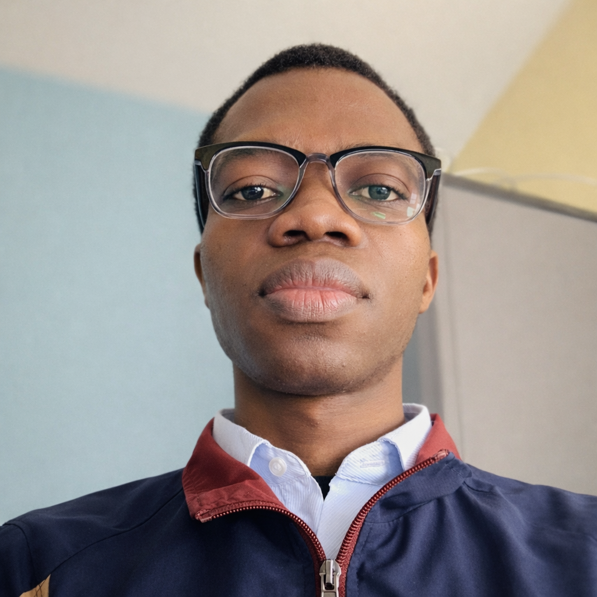

Data Scientist Junior & AI Engineer en Master 2 Ingénierie Mathématique & Data Science à l'Université de Haute-Alsace. Machine Learning, systèmes RAG/LLM et modélisation statistique appliqués à la détection de fraude, au scoring de risque et à la transition énergétique.

Étudiant en Master 2 Ingénierie Mathématique & Data Science à l'Université de Haute-Alsace, je conçois des solutions de Machine Learning et d'IA générative appliquées à des problématiques métier réelles : détection de fraude bancaire, scoring de risque, systèmes RAG/LLM et transition énergétique.
Mon parcours en mathématiques appliquées (chaînes de Markov, équations différentielles, réseaux de neurones informés par la physique) me donne une base théorique solide que j'applique systématiquement à des cas d'usage concrets — de la prédiction de pannes industrielles à la tarification actuarielle, en passant par la conception de systèmes de question-réponse sur des documents réglementaires complexes.
Je recherche un stage Data Scientist / AI Engineer à partir de mars 2027, dans les secteurs Finance, Banque ou Énergie.
Architecture de Machine Learning pour détecter les transactions frauduleuses omnicanales en temps réel, minimisant les pertes financières tout en préservant l'expérience client. Benchmarking de Logistic Regression, Random Forest, XGBoost et LightGBM, validation par 5-fold cross-validation, interprétabilité via XAI (ratio montant/solde, déviation hebdomadaire, incohérence géographique).
Pour une banque, chaque fraude bloquée à tort est un client mécontent, et chaque fraude non détectée est une perte sèche. Ce modèle réduit les pertes financières sans pénaliser l'expérience client — un arbitrage directement transposable à un système de surveillance des transactions en production.
Plateforme de tarification dynamique transformant données démographiques et comportementales en stratégie de pricing actuariel. Régression linéaire multiple avec validation croisée, et conception d'un score de risque propriétaire ("Risk-Pulse") formalisant l'impact non-linéaire des facteurs combinés.
Un assureur qui tarife mal ses contrats perd de l'argent sur les profils à risque et perd des clients sur les profils sains, faute de leur proposer un tarif attractif. Ce moteur de scoring ajuste la prime au risque réel de chaque assuré, ce qui améliore directement le ratio de sinistralité tout en restant compétitif sur les bons profils.
Projet en cours. Système de Retrieval-Augmented Generation permettant d'interroger en langage naturel des documents réglementaires complexes du secteur de l'énergie, tels que la RE2020 — combinant recherche sémantique et architecture LLM pour fiabiliser l'accès à une information technique dense.
Un bureau d'études ou un énergéticien perd un temps considérable à chercher la bonne clause dans des centaines de pages de réglementation technique. Ce système permet de poser une question en langage courant et obtenir une réponse sourcée dans le texte réglementaire — un gain de temps direct pour les équipes techniques et conformité.
Outil d'analyse de la transition énergétique en Europe : clustering K-Means/hiérarchique des pays (intensité carbone, part EnR, dépendance fossile), modélisation des trajectoires depuis 2010 et projections à horizon 2050 avec calcul du TCAC pour le solaire et l'éolien.
Pour orienter l'allocation de fonds de transition énergétique, un décideur public ou un investisseur a besoin de savoir quels pays progressent réellement et lesquels stagnent. Cet outil transforme des données brutes en score d'ambition comparable, avec des recommandations d'allocation directement exploitables.
Estimation de la probabilité de panne de machines en production via l'estimateur non-paramétrique de Kaplan-Meier. Calcul des taux de défaillance instantanés pour estimer la durée de vie résiduelle utile (RUL) et planifier les interventions avant la phase critique d'usure.
Un arrêt de production non planifié coûte bien plus cher qu'une maintenance anticipée. Ce modèle permet de passer d'une maintenance corrective ou systématique à une maintenance prédictive, ciblée juste avant la panne — moins d'arrêts non planifiés, moins de pièces changées trop tôt.
Collecteur automatique de données pour le réseau Vélostation de l'agglomération mulhousienne (m2A) : capture en temps réel de l'état de toutes les stations via l'API GBFS de Nextbike, calcul d'un score de tension par station et archivage horodaté pour constituer un jeu de données d'entraînement ML.
Une station de vélos vide ou pleine est un usager perdu. Ce pipeline identifie en temps réel les stations critiques et constitue l'historique nécessaire pour prédire les besoins de régulation — la base d'un système de réallocation proactive des vélos plutôt que réactive.
Résolution et reconstruction du système chaotique de Lorenz par réseaux de neurones informés par la physique. Architecture MLP améliorée par plongements de Fourier pour atténuer le biais spectral, entraînement par curriculum learning en trois étapes et raffinement L-BFGS.
Au-delà de la recherche pure, cette approche s'applique à des systèmes industriels difficiles à instrumenter : reconstruire l'état complet d'un système à partir d'un seul capteur, ce qui réduit le nombre de capteurs physiques nécessaires en surveillance industrielle ou en jumeau numérique.